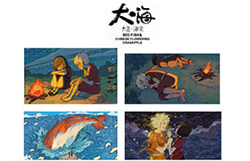

影片的世界观源自梁旋的一个梦，创意源自《庄子·逍遥游》中的“北冥有鱼，其名为鲲，鲲之大，不知其几千里也”，在此基础上构建了属于自己的世界观；其故事雏形来源于导演的先后两个梦， 电影还融合了许多来自古书《山海经》、《搜神记》与上古神话“女娲补天”等的传统元素，并基于这些元素打造了一个奇幻世界 。影片发生的场景源自中国客家围楼（又称土楼）。2004年梁旋等人把 梦里的想法做成了一个短片，他于2005年和张春一起创立了彼岸天，希望聚集起一帮人把最初的梦做成电影；2007年底，他们凭借短片《燕尾蝶》拿到了第一笔做样片的资金，之后投入长片《大鱼海棠》 的创作，导演梁旋与张春带着主创人员对福建的土楼进行了多次采风。构思修改剧本用了两三年时间，并制作完成了近20分钟的电影片段。2010年，该项目因后续资金未到位而 暂停，直到2013年影片发起众筹，这一举动引起光线传媒总裁王长田注意并在同年11月正式投资电影及彼岸天团队，使得影片制作重新走上了正轨 用2D动画，场景和部分配角结合了3D的方式制作；将2D动画做成3D效果的过程中，较多体现的是大场景和景深的效果。
场景图

设计稿
人物设计
影在2013年以45天里获得超过158万元资金支持创下中国众筹融资的记录。
预告片中为老奶奶配音的潘淑兰已经77岁，她是1997年中文版《泰坦尼克号》里老年Rose的配音演员。
《大鱼海棠》的原声配乐为吉田洁，2004年这个故事被做成flash短片时所采用的配乐正是吉田洁的《遥远的旅途》。
影片由于多次被网友误传不实上映信息但未上映，被戏称为“神坑”。
影片曾被时光网误传在2012年12月29日上映，《大鱼海棠》在网站上的期待分数高达9.5分，为当年所有即将上映电影最高分。
章子怡、佟大为、李少红、李玉等演员导演曾公开推荐该片，章子怡曾表示愿意为该片角色配音。
《大鱼海棠》珍藏版明信片在2012年3月由官方预先发布，2千套明信片在3天内预售被抢空。
某杂志采访B T在《大鱼海棠》诞生前的历史，导演Tidus凭借一封长信打动投资人投资百万美金启动电影。
《大鱼海棠》有很多灵感来自于古中国。
梁旋他们在创作过程中没有把这个故事当做三角恋来解读，只是人要追求和守护的东西。
梁旋认为结局实际上是比较开放的 。
电影原本还有另外一个彩蛋，后来因为片长的原因卡掉了，就是有一天椿会变成一条鱼再跟湫重聚，因为他已经成了接班人，他也许在那里会待8000年。
《大鱼海棠》背后的故事梁旋他们写了几万字的小传；
梁旋他们是有续集的计划，只是还没找到故事的灵魂，情况不成熟因此还没启动，电影的彩蛋是关于湫的，续集意味着他可能是主角。